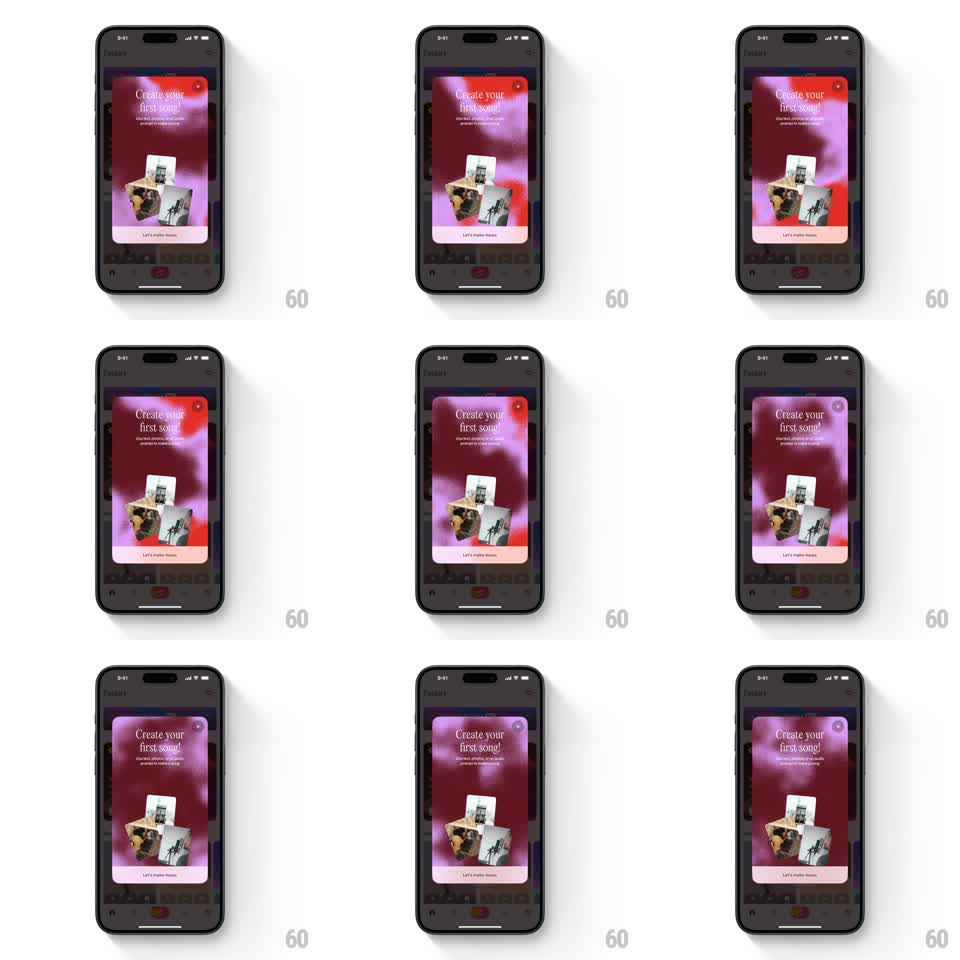

Media
Frame-by-frame

Rebuild this animation 1:1: Suno's "Create your first song" onboarding card - a grainy, fluid gradient of pink, red, and purple blobs slowly morphs behind the card's content in an endless loop.

Rebuild this animation 1:1: Suno's "Create your first song" onboarding card - a grainy, fluid gradient of pink, red, and purple blobs slowly morphs behind the card's content in an endless loop. ## Integration Integration: stack-agnostic spec - springs given as stiffness/damping, timed motions as duration + curve; map every value to your framework and animation library of choice. ## Scene A rounded modal card centered over the dimmed Suno feed. Inside: a living gradient background (hot pink, red, violet, and near-black blobs bleeding into each other), a close X at top-right, the headline "Create your first song!" with two lines of subtext, a small stack of song-card images at center, and a white "Let's make music" button at bottom. ## Motion spec Pattern: looping fluid-gradient background with grain. - 4-5 radial blobs drift on slow independent paths (each 8-14s loop, ease-in-out), scaling +-20% and wandering within the card bounds; their overlapping colors blend and shift continuously. - A static grain/noise overlay sits on top of the gradient (fine monochrome noise, ~8% opacity), giving it a printed texture. - The card content (headline, images, button) stays perfectly still - only the background moves. - The gradient loop is seamless: blob paths close on themselves so no jump is visible. - On entry the card scales in (0.92 -> 1, spring ~300/20) with the gradient already running. ## Calibration - Motion is slow and ambient - no blob should cross the card in under 6 seconds. - Blobs stay soft-edged (heavy blur); hard shapes break the effect. ## Reduced motion Gradient freezes on a single frame; grain remains. ## Don't miss - The palette is warm-dominant: pinks and reds lead, purple supports, black grounds. - The grain never animates - animated noise reads as video static, not texture.